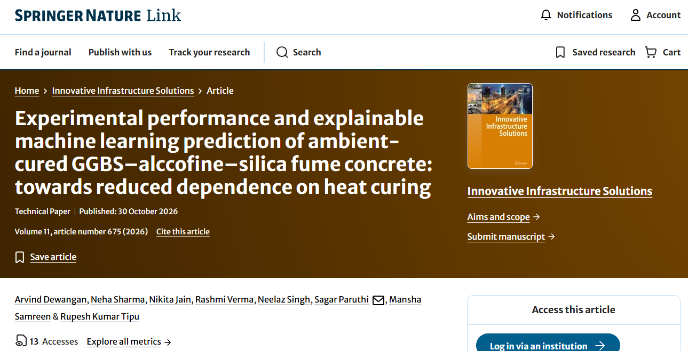
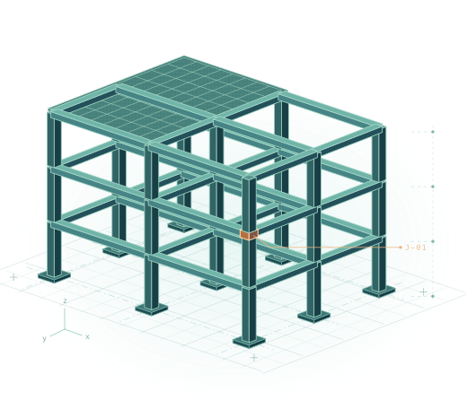

Latest publication
Experimental performance and explainable machine learning prediction of ambient-cured GGBS–alccofine–silica fume concrete: towards reduced dependence on heat curing

Structural engineering & AI
How can data help engineers choose a concrete mix, design a beam or predict how a pile will settle? These questions guide my research.


01 Selected research
Selected papers from three areas of practice. Each study connects a design decision to the data and mechanics behind it.
GreenMix-Pareto explores the trade-offs in low-carbon mix design while accounting for uncertainty in predicted performance.
Ain Shams Engineering Journal · 2026A surrogate model helps compare reinforced concrete beam designs across competing objectives and uncertain predictions.
Structures · 2026A physics-guided model combines soil test profiles with pile geometry to predict the load–settlement curve.
Scientific Reports · 202602 Research output
Search by topic, author, journal or DOI. Explore the records from my CV and Scholar export alongside works linked to my ORCID.
03 Beyond the papers
Books
R. K. Tipu and P. Agarwal · ISBN 9789365891249
R. K. Tipu and K. S. Pandya · ISBN 9789819209057
Funded research · Principal Investigator
This seed project investigates how prediction and optimization can support structural design decisions.
₹2,41,500 · Two-year seed grant
The most recent application describes a reusable formwork system that controls curing by zone and interlocks demoulding with safety checks.
202641118986 · Published 9 Oct 2026. Dayananda Sagar College of Engineering filed the application. Examination pending as of 14 Oct 2026.
202511032159 · Published 18 Apr 2025
202511021529 · Published 21 Mar 2025
202411057196 · Published 16 Aug 2024
202411019684 · Published 10 May 2024
202411014830 · Published 8 Mar 2024
202411011153 · Published 23 Feb 2024
202411007500 · Published 16 Feb 2024
202411007359 · Published 9 Feb 2024
04 Academic profile
Over 12 years of teaching and six years of research across civil engineering and computing. DSCE faculty directory ↗
Dayananda Sagar College of Engineering, Bengaluru
K. R. Mangalam University, Gurugram
CHARUSAT University, Anand
BITS Edu Campus, Vadodara
KJIT Campus, Savli, Vadodara
DITMR, Faridabad
My doctoral research used machine learning to predict concrete properties and optimization to select mix proportions.
In the classroom
At DSCE, I teach MATLAB and Spreadsheet Applications for Civil Engineering and support laboratory work in mechanics of materials. My teaching also covers structural analysis, reinforced concrete, steel design and concrete technology.
In computing and research courses, students work with Python, machine learning, data preparation and research ethics.
I co-guide four Ph.D. scholars. I have guided two M.Tech dissertations and mentored more than 30 B.Tech students on projects.
Recent dissertation topics include predicting the workability of fresh concrete and estimating the load capacity of composite columns.
05 Contact
For research collaborations, invited lectures and postgraduate projects in structural engineering or applied AI.
rupesh-cvl@dayanandasagar.edu ↗Department of Civil Engineering · DSCE
Bengaluru, Karnataka, India